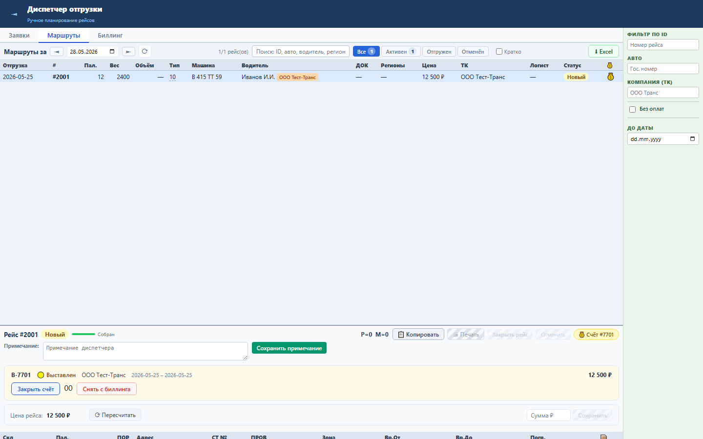

ТМС-2 Sprint 20: Защита выставленного рейса
Блок защищает рейсы с PAY_ORDER_ID: нельзя отменить рейс или менять состав, пока рейс находится в счёте.
Бизнес-процессы
- Рейс выставлен в счёт.
- Карточка показывает тег счёта.
- Опасные действия блокируются UI и backend возвращает 409.
- Цена и примечание остаются разрешенными по ТЗ.

Проверка: backend 7 passed, UI smoke/load passed.